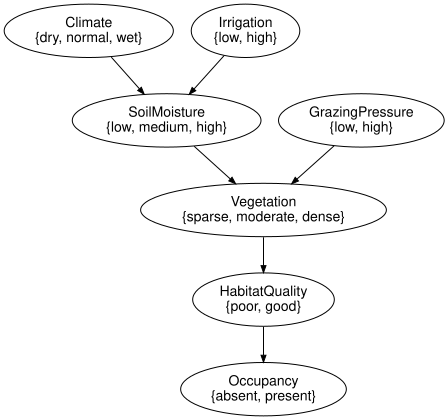
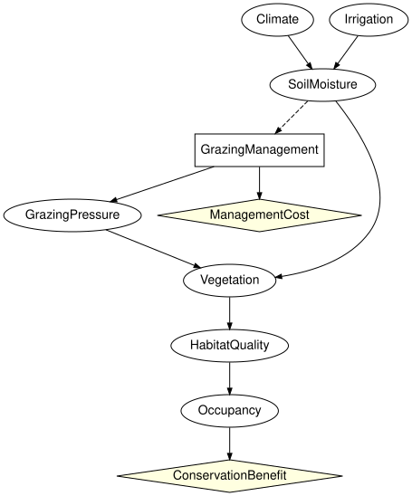

Composing a management decision with a zoo network
Simon Frost
- Overview
- Setup
- Opening the zoo network at a boundary
- A management component and a valuation component
- Observability at the boundary
- Composing and optimising the closed composite
- Optimising the decision component in context
- Summary
- References
Overview
Ecological Bayesian networks are often built first as descriptions of a system, and a management decision is added later (Marcot et al. 2006; Runge et al. 2011). The usual way to add it is to edit the network into one larger influence diagram. With open influence diagrams the network can stay as it was published: it is opened at a boundary, a separate component holds the decision, its cost and how it acts on the system, and the pieces are composed. The decision then sees exactly what the boundary declares observed, and nothing else.
This vignette does that with the reference habitat network of the model zoo of EcologicalBayesianNetworks.jl. The network models soil moisture from climate and irrigation, and the vegetation, habitat quality and occupancy of a species from soil moisture and grazing pressure. In the zoo the grazing pressure is a root with a fixed prior. Here a manager sets it instead, through a grazing decision made on the observed soil moisture. The vignette opens the network at the boundary, attaches the decision component, composes, optimises the closed composite, and then optimises the decision component on its own against the context the network induces on its boundary.
Setup
load_model builds a model of the zoo. The reference habitat network is built into the zoo under the MIT licence, so it needs no download, and so is the SPEC section 46 grazing diagram, from which the decision component borrows its numbers.
using CategoricalInfluenceDiagrams
using EcologicalBayesianNetworks
zoo = ["reference_habitat_bn", "reference_grazing_id"]
[(name, model_info(name).licence, model_info(name).redistribution) for name in zoo]2-element Vector{Tuple{String, String, String}}:
("reference_habitat_bn", "MIT", "builtin")
("reference_grazing_id", "MIT", "builtin")habitat = load_model("reference_habitat_bn")
grazing = load_model("reference_grazing_id")
[x => states(syntax(habitat), x) for x in variable_names(syntax(habitat))]7-element Vector{Pair{Symbol, Vector{Symbol}}}:
:Climate => [:dry, :normal, :wet]
:Irrigation => [:low, :high]
:SoilMoisture => [:low, :medium, :high]
:GrazingPressure => [:low, :high]
:Vegetation => [:sparse, :moderate, :dense]
:HabitatQuality => [:poor, :good]
:Occupancy => [:absent, :present]to_graphviz(syntax(habitat))
The kernels of the zoo network, keyed by variable name, are the tables every component below reads:
zoo_kernels = Dict{Symbol,FiniteKernel}(x => kernel(habitat, x)
for x in variable_names(syntax(habitat)))
zoo_kernels[:GrazingPressure]FiniteKernel{Float64}(I → GrazingPressure{low,high})
()
low 0.5
high 0.5Opening the zoo network at a boundary
Cut the network at soil moisture and grazing pressure, the two parents of vegetation. Upstream of the cut is the abiotic part, which generates soil moisture; downstream is the biotic part, which reads soil moisture and grazing pressure and generates vegetation, habitat quality and occupancy. Grazing pressure is generated by its own prior, a third piece. In the biotic part both cut variables are exogenous (closed = false), so they can be inputs.
abiotic = bayesnet(:Climate => [:dry, :normal, :wet], :Irrigation => [:low, :high],
:SoilMoisture => [:low, :medium, :high];
mechanisms = [:SoilMoisture => (:Climate, :Irrigation)])
pressure_prior = bayesnet(:GrazingPressure => [:low, :high])
biotic = bayesnet(:SoilMoisture => [:low, :medium, :high], :GrazingPressure => [:low, :high],
:Vegetation => [:sparse, :moderate, :dense],
:HabitatQuality => [:poor, :good], :Occupancy => [:absent, :present];
mechanisms = [:Vegetation => (:SoilMoisture, :GrazingPressure),
:HabitatQuality => :Vegetation,
:Occupancy => :HabitatQuality],
closed = false)
nothing # hideAs open influence diagrams the three pieces have no decisions and no utilities. Placing the abiotic part beside the prior (⊗) and composing with the biotic part (⋅) glues the network back together, and the result is the zoo network again:
E0 = Open(InfluenceDiagram(abiotic); outputs = [:SoilMoisture])
P0 = Open(InfluenceDiagram(pressure_prior); outputs = [:GrazingPressure])
H0 = Open(InfluenceDiagram(biotic); inputs = [:SoilMoisture, :GrazingPressure],
outputs = [:Occupancy])
N = (E0 ⊗ P0) ⋅ H0
println(N)
canonicalize(apex(OpenBayesNet(N))) == canonicalize(reference_habitat_bn())OpenInfluenceDiagram(7 variables, 7 mechanisms, 0 decisions, 0 utilities; Symbol[] -> [:Occupancy])
trueThe semantics agrees too. Under the empty strategy the reward kernel of N has zero reward, and its probability part is the zoo model’s marginal of occupancy:
rN = interpret(N, zoo_kernels, Dict{Symbol,AbstractUtility}(), Strategy())
kernel(rN) ≈ marginal(habitat, :Occupancy), all(iszero, reward(rN))(true, true)A management component and a valuation component
The manager replaces the prior on grazing pressure. The management component holds a decision, GrazingManagement (exclude, reduce or maintain grazing), made on the soil moisture; a mechanism for the grazing pressure that the decision achieves; and the cost of the decision. It takes the soil moisture as an observed input and passes it on, with the grazing pressure, to the biotic part. What the manager observed is information for the decision, and the biotic part has no decision to inform, so the soil moisture leaves the component hidden: observed takes a named tuple that flags each foot separately, and here names the soil moisture on the input foot only. The kernel of the grazing pressure and the cost are those of the zoo’s SPEC section 46 grazing diagram: excluding grazing makes low pressure likely but not certain, and costs 40, reducing it costs 15, maintaining it nothing.
management = influence_diagram(:SoilMoisture => [:low, :medium, :high],
:GrazingManagement => [:exclude, :reduce, :maintain],
:GrazingPressure => [:low, :high];
mechanisms = [:GrazingPressure => :GrazingManagement],
decisions = [:GrazingManagement => :SoilMoisture],
utilities = [:ManagementCost => :GrazingManagement],
closed = false)
M = Open(management; inputs = [:SoilMoisture],
outputs = [:SoilMoisture, :GrazingPressure],
observed = (inputs = [:SoilMoisture],))
println(M)
utility_table(bound_utilities(grazing)[:ManagementCost])OpenInfluenceDiagram(3 variables, 1 mechanisms, 1 decisions, 1 utilities; [:SoilMoisture!] -> [:SoilMoisture, :GrazingPressure])
3-element Vector{Float64}:
-40.0
-15.0
0.0A valuation component scores the outcome. The zoo network has no utility, so the value of the species’ presence is a choice made here: 1000 against a management cost of at most 40, a reserve that values the species highly.
V = Open(influence_diagram(:Occupancy => [:absent, :present];
utilities = [:ConservationBenefit => :Occupancy],
closed = false);
inputs = [:Occupancy])
benefit(value) = TabularUtility([FiniteAxis(:Occupancy, [:absent, :present])],
[0.0, value])
utilities = Dict{Symbol,AbstractUtility}(:ManagementCost => bound_utilities(grazing)[:ManagementCost],
:ConservationBenefit => benefit(1000.0))
println(V)OpenInfluenceDiagram(1 variables, 0 mechanisms, 0 decisions, 1 utilities; [:Occupancy] -> Symbol[])The kernels of the composite are those of the zoo network, except that grazing pressure is now generated by the management decision:
kernels = merge(zoo_kernels, Dict(:GrazingPressure => kernel(grazing, :GrazingPressure)))
kernels[:GrazingPressure]FiniteKernel{Float64}(GrazingManagement{exclude,reduce,maintain} → GrazingPressure{low,high})
exclude reduce maintain
low 0.95 0.6 0.15
high 0.05 0.4 0.85Observability at the boundary
The decision reads the soil moisture across the boundary, so the boundary must declare it observed. The abiotic part as opened above declares nothing observed, as Open does by default, and so it does not match the management component:
try
compose(E0, M)
catch e
sprint(showerror, e)
end"ObservabilityMismatchError: compose: outputs(A) vs inputs(B): variable :SoilMoisture at position 1 is :hidden on the left but :observed on the right; glued interface variables must agree on observability"Nor may the management component hide the soil moisture from its own decision (rule 3 of the typed-interface rule):
try
Open(management; inputs = [:SoilMoisture], outputs = [:SoilMoisture, :GrazingPressure])
catch e
sprint(showerror, e)
end"DiagramInterfaceError: rule 3 (a decision reads only internal or observed input-foot variables) is violated: decision :GrazingManagement has the hidden input :SoilMoisture in its information set; declare it observed or remove the arc"So the abiotic part is opened with soil moisture observed. The management component passes the soil moisture on hidden, so the biotic part is used exactly as it was opened above, with everything hidden: it has no decision, and nothing downstream reads the soil moisture as information. Grazing pressure stays hidden too: the manager chooses the management, not the pressure it achieves. Both boundaries now match:
E = Open(InfluenceDiagram(abiotic); outputs = [:SoilMoisture], observed = [:SoilMoisture])
H = H0
println(E)
interface_matches(codom(E), dom(M)), interface_matches(codom(M), dom(H))OpenInfluenceDiagram(3 variables, 3 mechanisms, 0 decisions, 0 utilities; Symbol[] -> [:SoilMoisture!])
(true, true)Composing and optimising the closed composite
The four components compose in sequence into a closed influence diagram:
whole = E ⋅ M ⋅ H ⋅ V
println(whole)OpenInfluenceDiagram(8 variables, 7 mechanisms, 1 decisions, 2 utilities; Symbol[] -> Symbol[])to_graphviz(apex(whole); states = false)
Its apex is an ordinary influence diagram, so optimize solves it with the solvers of InfluenceDiagrams.jl (decision variable elimination by default). The policy table is indexed by the soil moisture (low, medium, high):
best = optimize(whole, kernels, utilities)
round(best.expected_utility; digits = 2), policy_table(best.strategy[:GrazingManagement])(469.82, [:reduce, :reduce, :exclude])The optimal policy reacts to the soil moisture, and it is worth more than any fixed action:
fixed = [a => round(contextual_value(whole, kernels, utilities,
Strategy(:GrazingManagement => ConstantPolicy(a)));
digits = 2)
for a in (:exclude, :reduce, :maintain)]3-element Vector{Pair{Symbol, Float64}}:
:exclude => 468.12
:reduce => 468.32
:maintain => 451.45With a lower value on the species’ presence the decision is not worth taking. Valued at 100, the cost of management is never repaid and the optimal policy maintains grazing whatever the soil moisture:
low_value = merge(utilities, Dict(:ConservationBenefit => benefit(100.0)))
policy_table(optimize(whole, kernels, low_value).strategy[:GrazingManagement])3-element Vector{Symbol}:
:maintain
:maintain
:maintainOptimising the decision component in context
The management component is open: it has inputs and outputs, so it has no expected utility of its own. It has one in a context: a law μ on its input and a value c for each of its output states. The rest of the composite supplies both.
boundary_lawofEis the law the abiotic part induces on the soil moisture.continuation_valueofH ⋅ Vis the expected conservation benefit that the biotic part and the valuation earn from each joint state of soil moisture and grazing pressure.
ν = boundary_law(E, kernels, utilities, Strategy())
rHV = interpret(H ⋅ V, kernels, utilities, Strategy())
c = continuation_value(rHV)
(soil_moisture = round.(ν; digits = 3),
continuation = [y => round(v; digits = 1)
for (y, v) in zip(joint_states(dom(rHV)), c)])(soil_moisture = [0.288, 0.403, 0.309], continuation = [(:low, :low) => 395.2, (:medium, :low) => 521.8, (:high, :low) => 607.0, (:low, :high) => 338.9, (:medium, :high) => 451.6, (:high, :high) => 521.8])contextual_optimize maximises the component’s value in that context over its legal strategies, the policies that read the soil moisture. It finds the optimum of the closed composite and the same policy:
local_best = contextual_optimize(M, kernels, utilities; prior = ν, continuation = c)
(local_best.expected_utility ≈ best.expected_utility,
local_best.strategy == best.strategy, local_best.diagnostics)(true, true, (nstrategies = 27, method = :value_table))This is the contextual identity: for every strategy σ of the management component, its value in the context (ν, c) is the expected utility of the whole composite. The abiotic part earns no reward of its own, so nothing is added for it.
all(contextual_value(M, kernels, utilities, σ; prior = ν, continuation = c) ≈
contextual_value(whole, kernels, utilities, σ)
for σ in (best.strategy,
(Strategy(:GrazingManagement => ConstantPolicy(a))
for a in (:exclude, :reduce, :maintain))...))trueThe context matters. Optimised against a zero continuation, as if nothing downstream depended on the grazing, the component sees only the cost of management and maintains grazing everywhere. Composed with the network, that choice is worth less than the optimum:
isolated = contextual_optimize(M, kernels, utilities; prior = ν, continuation = zeros(6))
(policy = policy_table(isolated.strategy[:GrazingManagement]),
composed_value = round(contextual_value(whole, kernels, utilities, isolated.strategy);
digits = 2),
optimum = round(best.expected_utility; digits = 2))(policy = [:maintain, :maintain, :maintain], composed_value = 451.45, optimum = 469.82)Here the failure is easy to see, because the context that was left out is the whole benefit. The third vignette, Why optimisation does not compose, shows that it goes wrong even when each component is optimised against the context its neighbours actually induce, one component at a time.
Summary
The reference habitat network of the model zoo was opened at the boundary between soil moisture and grazing pressure and the rest of the network, and composed back to itself with the same kernel of occupancy. Replacing the prior on grazing pressure by a management component, with a decision on the observed soil moisture, the SPEC section 46 kernel of achieved grazing pressure and its cost, and adding a valuation of occupancy, gave a closed influence diagram that optimize solves. The boundary had to declare the soil moisture observed where the decision reads it, on the input foot of the management component: an embedded network hides everything, and a decision that reads a hidden input is refused. Nothing downstream needed it, so it left the component hidden, and the biotic part of the network was composed as it was opened. Optimised on its own against the law the network induces on its input and the value the network earns from its outputs, the decision component attains the optimum of the whole; optimised against a context that leaves the network out, it does not.
References
Marcot, Bruce G., J. Douglas Steventon, Glenn D. Sutherland, and Robert K. McCann. 2006. “Guidelines for Developing and Updating Bayesian Belief Networks Applied to Ecological Modeling and Conservation.” Canadian Journal of Forest Research 36 (12): 3063–74. https://doi.org/10.1139/x06-135.
Runge, Michael C., Sarah J. Converse, and James E. Lyons. 2011. “Which Uncertainty? Using Expert Elicitation and Expected Value of Information to Design an Adaptive Program.” Biological Conservation 144 (4): 1214–23. https://doi.org/10.1016/j.biocon.2010.12.020.